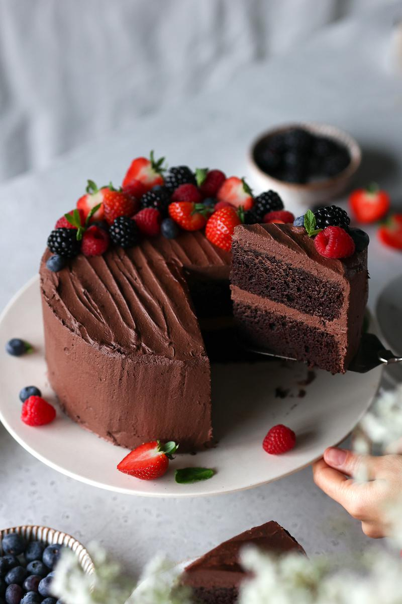

Chocolate cake

A good chocolate cake can be enjoyed on just about any special occasion: birthdays, anniversaries, graduations, potluck parties. It's a classic! This chocolate cake is the new and improved version of our original recipe: it's delicious, moist, and fluffy, and no one will even guess it's completely plant-based!
Definitely a recipe you need to try!
Ingredients:
- unsweetened milk milk of choice
- white vinegar
- all purpose flour
- cocoa powder
- baking powder
- baking soda
- salt
- vanilla extract
for decoration
- chocolate shavings
- fresh berries
- fresh mint leaves
Steps:
- Lightly grease two 8-inch (20 cm) round cake pans with oil and line the bottom with cut-out round pieces of parchment paper the size of the base of the cake pans.
- To a medium bowl, add the milk and vinegar, and mix. Set aside. You will see it starts to curdle, and this is what creates vegan buttermilk.
- Place a sieve over a large bowl, and sift all the dry ingredients through it. Mix together, and then create a shallow well in the middle. Preheat the oven to 350°F (180°C).
- Returning to the medium bowl containing the buttermilk, add all of the remaining wet ingredients. Mix thoroughly.
- Add all the wet ingredients to the shallow well in the dry ingredients and mix until everything is just combined, but be careful not to overmix.
- Divide the cake batter between the two cake pans. Gently tap the pans on the counter a couple of times to level out the batter and to remove any air bubbles. Bake in the centre rack of the preheated oven for 35 minutes, or until a thin wooden skewer inserted into the centre comes out clean.
- Decorate the chocolate cake with desired toppings, and enjoy!